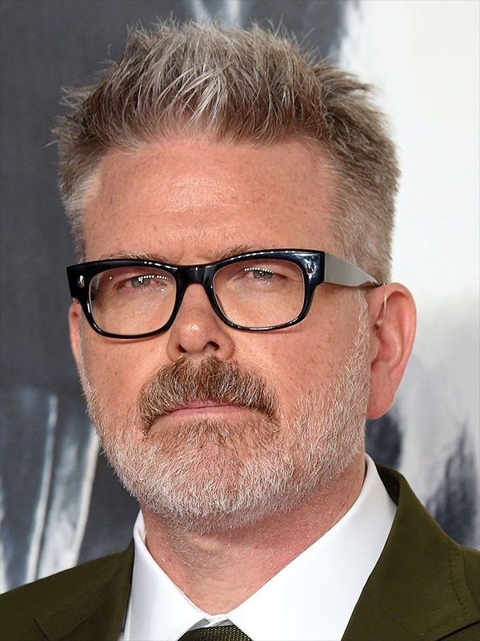
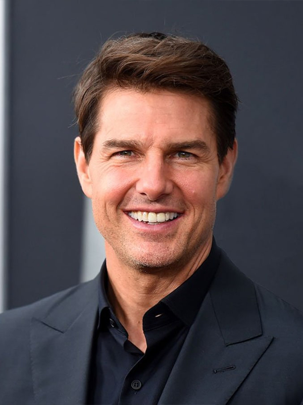
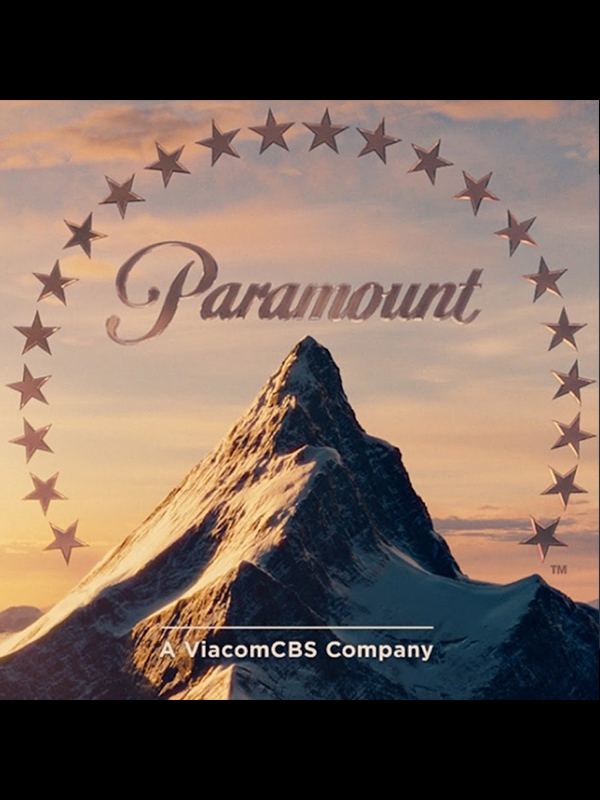
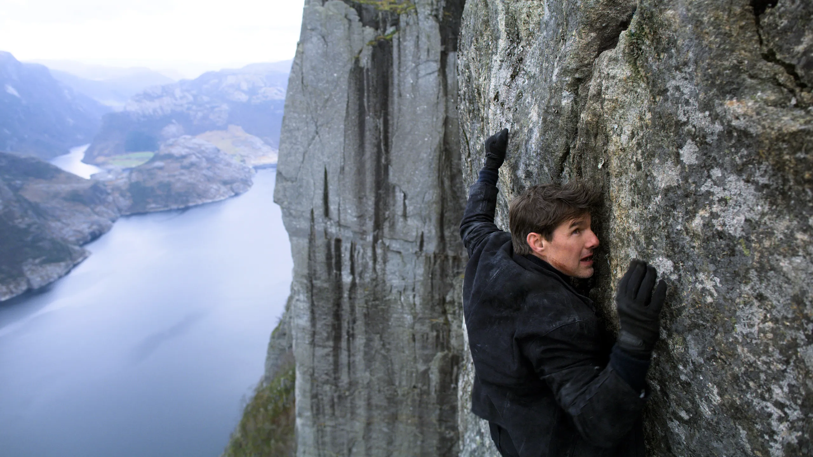
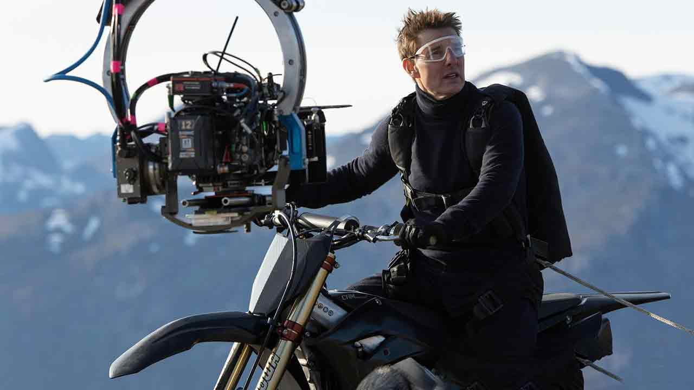
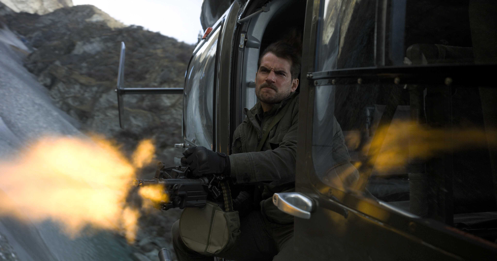

Mission: Impossible – Fallout is a 2018 American action spy film written and directed by Christopher McQuarrie. It is the sequel to Mission: Impossible – Rogue Nation (2015) and is the sixth installment in the Mission: Impossible film series. The film stars Tom Cruise as Ethan Hunt, with a supporting cast of Ving Rhames, Simon Pegg, Rebecca Ferguson, Henry Cavill, Angela Bassett, Sean Harris, Michelle Monaghan, and Alec Baldwin. In Mission: Impossible – Fallout, Ethan Hunt (Cruise) and his Impossible Missions Force (IMF) team seek to prevent nuclear weapon technology from reaching the Apostles, a bioterrorist offshoot of the Syndicate.
Directed by -
Christopher McQuarrie
 Christopher McQuarrie is an American film director, producer and screenwriter. He received the BAFTA Award, Independent Spirit Award, and Academy Award for Best Original Screenplay for the neo-noir mystery film The Usual Suspects (1995). He made his directorial debut with the crime thriller film The Way of the Gun (2000). He is a frequent collaborator with Tom Cruise, having written and directed the action films Jack Reacher (2012), Mission: Impossible – Rogue Nation (2015), Mission: Impossible – Fallout (2018), Mission: Impossible – Dead Reckoning Part One (2023), and the upcoming Dead Reckoning Part Two (2024). He was also a part of the writing and/or producing team on the films Valkyrie (2008), Edge of Tomorrow (2014), Jack Reacher: Never Go Back (2016), The Mummy (2017), and Top Gun: Maverick (2022), the latter of which received Academy Award nominations for Best Adapted Screenplay and Best Picture.
Produced by -
Tom Cruise
 Thomas Cruise Mapother IV, known professionally by his stage name Tom Cruise, is an American actor and producer. One of the world's highest-paid actors, he has received various accolades, including an Honorary Palme d'Or and three Golden Globe Awards, in addition to nominations for four Academy Awards.Cruise has largely starred in science fiction and action films, establishing himself as an action star, often performing his own risky stunts. He has played Ethan Hunt in the Mission: Impossible film series since 1996.Cruise is noted as having negotiated some of the most lucrative film deals in Hollywood, and was described in 2005 by Hollywood economist Edward Jay Epstein as "one of the most powerful – and richest – forces in Hollywood." Epstein argues that Cruise is one of the few producers (the others being George Lucas, Steven Spielberg and Jerry Bruckheimer) who are regarded as able to guarantee the success of a billion-dollar film franchise.
Distributed by -
Paramount Pictures
 Paramount Pictures Corporation is an American film and television production and distribution company and the namesake division of Paramount Global (formerly ViacomCBS). It is the fifth-oldest film studio in the world,[1] the second-oldest film studio in the United States (behind Universal Pictures), and the sole member of the "Big Five" film studios located within the city limits of Los Angeles.In 1916, film producer Adolph Zukor put 24 actors and actresses under contract and honored each with a star on the logo.[3] In 1967, the number of stars was reduced to 22 and their hidden meaning was dropped. In 2014, Paramount Pictures became the first major Hollywood studio to distribute all of its films in digital form only.[4] The company's headquarters and studios are located at 5555 Melrose Avenue, Hollywood, California.
2019 Winner Critics Choice Award-Best Action Movie
2019 Nominee BAFTA Film Award- Best Sound
2019 Winner OFCS Award-Best Stunt Coordination
2019 Winner CinEuphoria- Best Supporting Actor - Audience Award-Henry Cavill
2019 Winner OFCS Award-Best Stunt Coordination
The plot of Mission Impossible fallout

The movie begins with Ethan Hunt receiving a message about stolen plutonium that could potentially be used to create devastating nuclear weapons. Hunt and his team, including Benji Dunn (played by Simon Pegg) and Luther Stickell (played by Ving Rhames), are tasked with retrieving the plutonium before it falls into the wrong hands.
CIA Director Erica Sloane (played by Angela Bassett) assigns August Walker (played by Henry Cavill), a hardened and brutal operative, to accompany the IMF team to ensure the mission's success. However, Walker's methods and his contentious relationship with Hunt create tension within the team.
"The White Widow" (played by Vanessa Kirby) holds a key to obtaining the plutonium. To secure the deadly material, Hunt agrees to a dangerous exchange at a gala in Paris.
During the exchange, the situation turns chaotic, and the IMF team realizes that the plutonium's whereabouts have been manipulated by Solomon Lane (played by Sean Harris), a rogue former MI6 agent and leader of "The Apostles." Lane had planned to use the plutonium as leverage to sow chaos and destruction.
Hunt and his team are left with a ticking clock and multiple adversaries as they race against time to prevent a series of catastrophic nuclear attacks. In a high-octane helicopter chase in the mountains of Kashmir, Hunt faces a final showdown with Lane, who threatens to unleash global havoc.
As the film reaches its climax, loyalties are tested, and Hunt must make difficult choices to ensure the safety of millions. The story unfolds with intense action sequences, breathtaking stunts
"Mission: Impossible - Fallout" is celebrated for its gripping plot, impressive action set pieces, and Tom Cruise's dedication to performing daring stunts, solidifying its reputation as one of the standout entries in the long-running action franchise.
Behind The scenes

Tom Cruise, known for performing many of his own stunts, took it to new heights in this film. He trained extensively to execute the jaw-dropping stunts, including the helicopter chase and the HALO (High Altitude, Low Opening) jump from a plane at 25,000 feet.
The film utilized cutting-edge camera technology and aerial cinematography to capture the action in innovative and dynamic ways.
The filmmakers used innovative stunt rigging and camera setups to capture the action from different perspectives, immersing the audience in the heart-pounding sequences.
The hand-to-hand combat scenes in the film were carefully choreographed and rehearsed to create intense and realistic fight sequences.
The film emphasized practical effects over CGI, which added to the realism and intensity of the action sequences. Many of the explosions, crashes, and stunts were done on real sets with practical effects, creating a more visceral experience for the audience.
Filming took place in various global locations, from Paris to London, adding authenticity to the film's exotic settings and breathtaking visuals.With such daring stunts, safety was a paramount concern during production. The team took extensive precautions and measures to ensure the well-being of the cast and crew.
DID YOU KNOW?

Tom Cruise's Ankle Injury: During the filming of the rooftop chase scene in London, Tom Cruise broke his ankle while jumping between buildings. Despite the injury, Cruise insisted on continuing the take to capture the authentic reaction, and that actual take is included in the final film.
Longest Running Film Series Stunt: The HALO jump sequence, where Tom Cruise's character jumps out of a plane at 25,000 feet, is a standout action moment in the movie. It is considered one of the longest running stunts in film history and required intense training and meticulous planning.
Helicopter Flying: Tom Cruise underwent rigorous helicopter flight training and obtained his helicopter pilot's license to perform the challenging helicopter chase sequences in the film.
Impromptu Scene: The intense bathroom fight scene, where Tom Cruise's character faces off against a formidable opponent, was initially intended to be shorter. However, during rehearsal, the fight choreography was improvised and extended, resulting in one of the movie's most memorable action sequences.